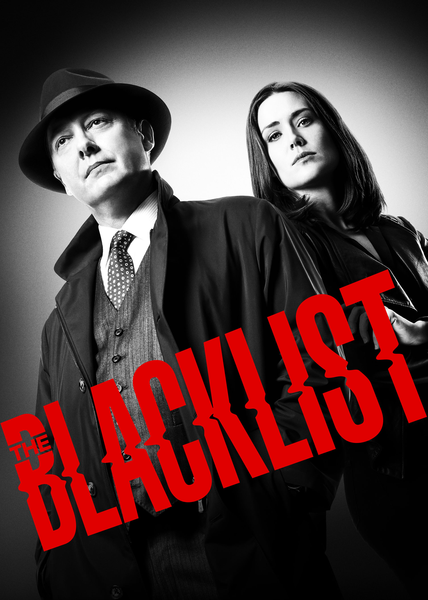

The Blacklist (No Brasil: Lista Negra)[1] é uma série de televisão americana do gênero espionagem, drama policial e ação que estreou em 23 de setembro de 2013 na rede NBC e uma semana depois, em 1 de outubro de 2013, no Brasil através do canal de televisão paga Sony.[2] A série gira em torno de Raymond "Red" Reddington (James Spader), um ex-oficial da marinha dos Estados Unidos que se tornou um criminoso de alto nível.
